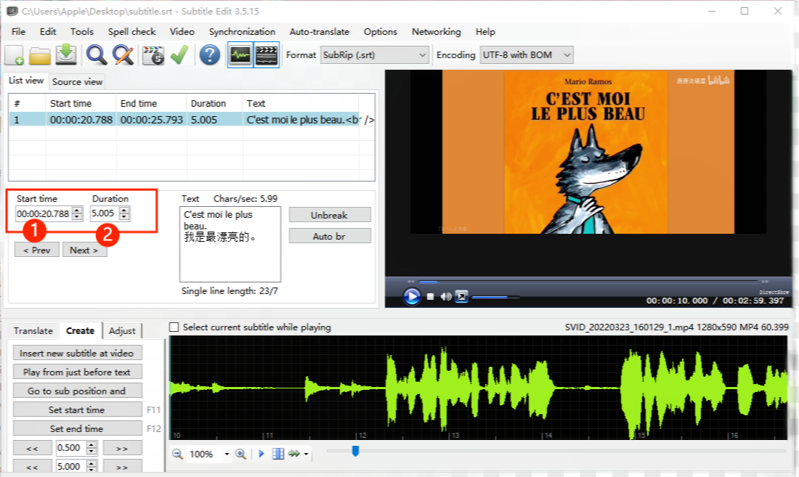

Step 6:
You can set the timeline in two ways.
First method:
Choose a subtitle line, then:
① Click the line below the wave form to choose a time point.
② Adjust the position of the point on the wave form to make it more accurate for a better effect.
③ Click Set start time or Set end time to change the start/end time of the subtitle line.
Second method:
Choose a subtitle line, then directlly edit its Start time and Duration.